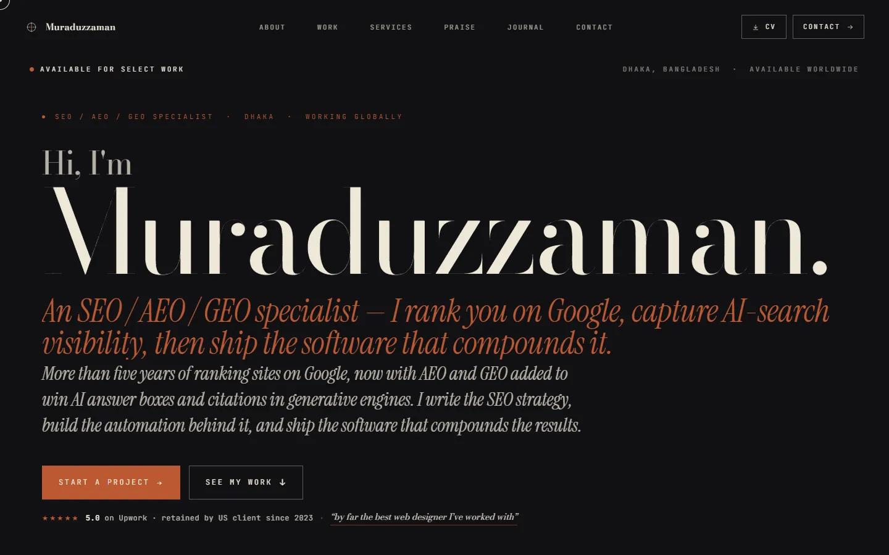
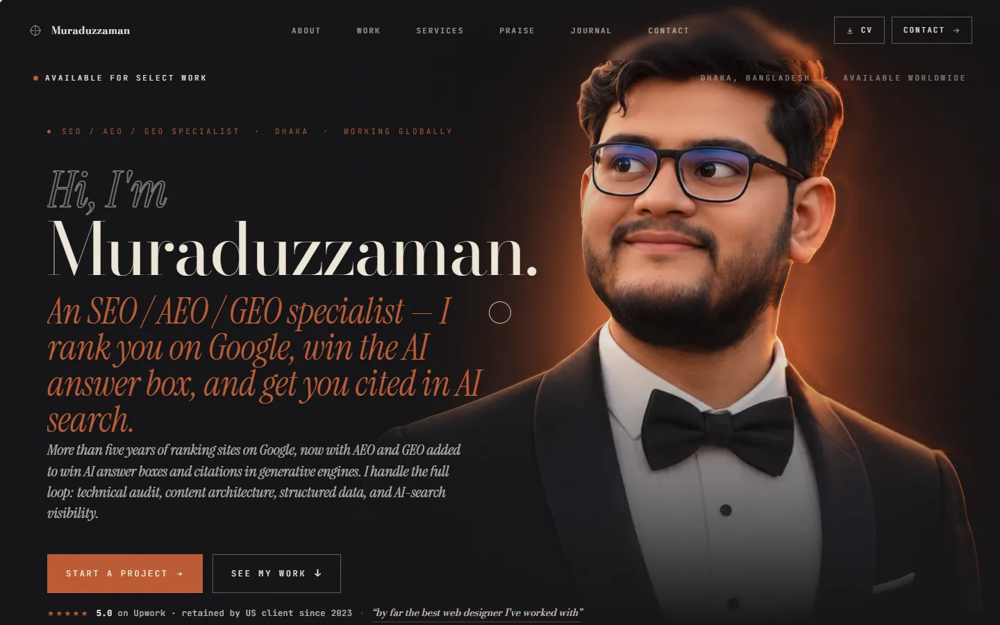
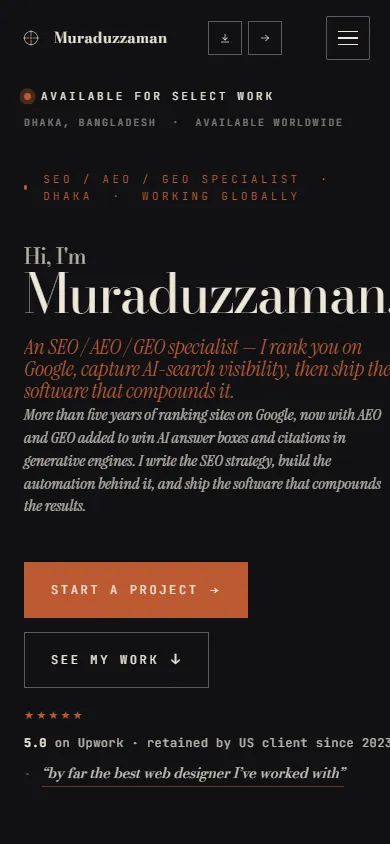
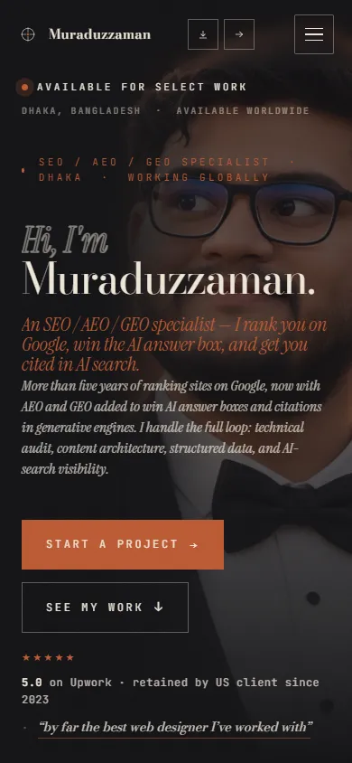
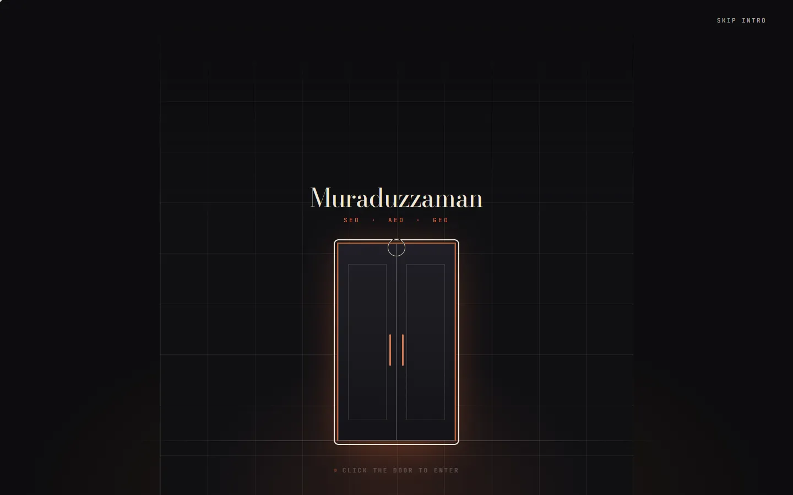
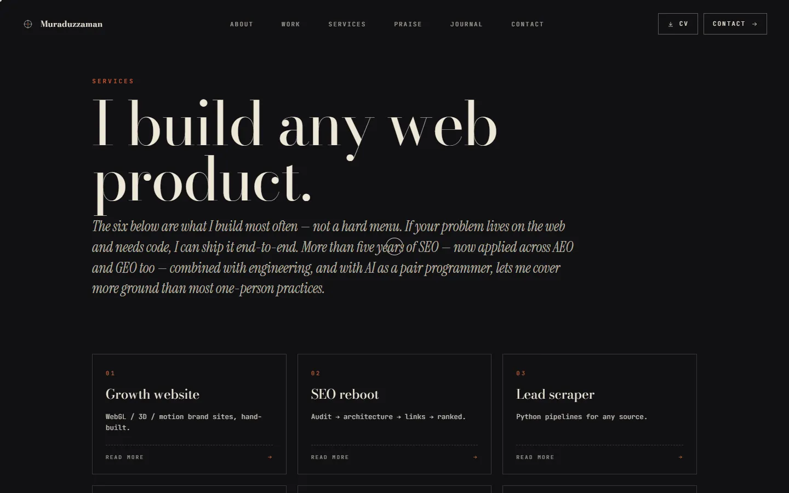
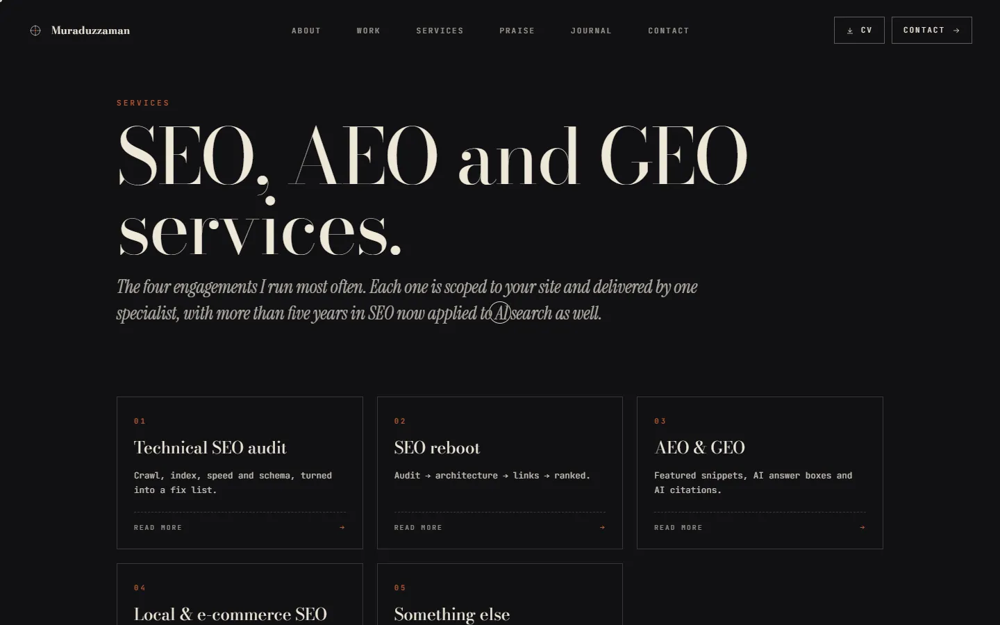
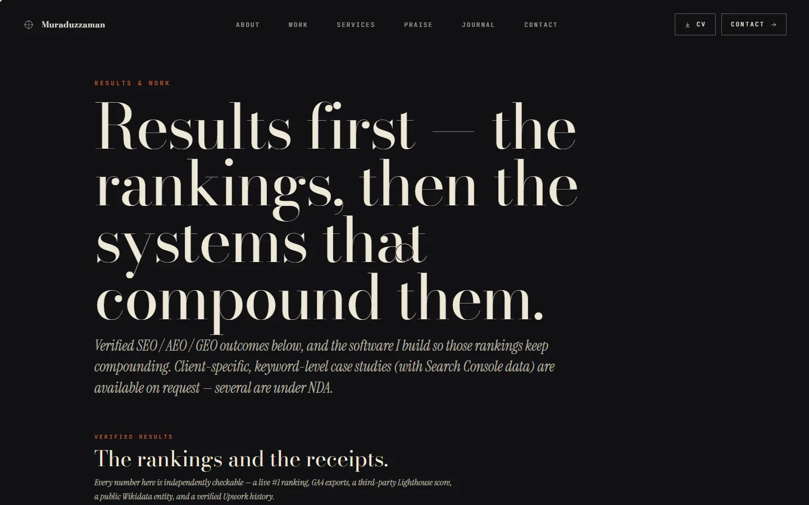
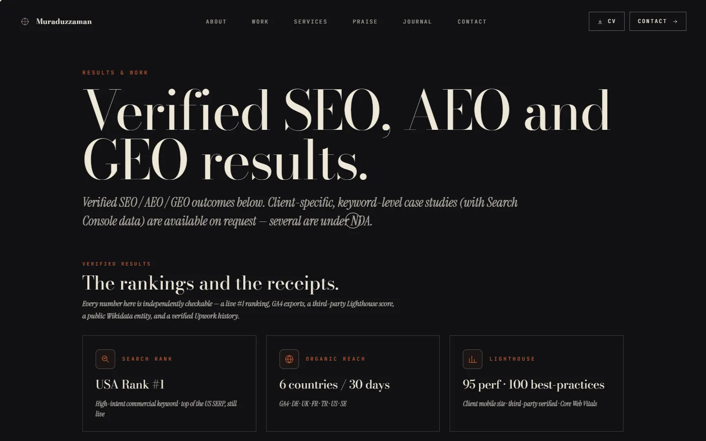

The site said two things at once: search specialist and software developer. This is the audit, the repositioning, the redesign, and the measured before and after.
Cover illustration (AI-generated). Every screenshot and number below is real.
Lighthouse accessibility
90 → 100
Homepage, mobile test
Lighthouse best practices
96 → 100
Homepage, mobile test
Lighthouse SEO
100 → 100
Held at the top score through the rebuild
Software pages retired
12
Six case studies, five services, one code page: all redirected
Service pages
1 → 4
Technical SEO audit, SEO reboot, AEO & GEO, Local & e-commerce SEO
Titles and descriptions fixed
32
Over-long title tags and meta descriptions brought within limits
01 · Before
When this work started, mjrifat.com was a hand-built static site with a strong technical base: 22 journal articles on SEO, AEO and GEO, structured data on every page, a sitemap, an llms.txt file, and a Lighthouse SEO score of 100.
The problem was the message. The homepage called me "a marketer who codes" and gave most of its length to software: a section of code excerpts, six software products, and service cards for Chrome extensions, Shopify themes and scrapers. A visitor looking for an SEO specialist had to read past all of it.
Before

Homepage hero. Tagline ends "then ship the software that compounds it."After

Homepage hero. One message, and a 3D figure that turns with scroll and pointer.
Before

Phone: the name runs off the right edge of the screen.After

Phone: the name fits on one line.
02 · Problems identified
The audit covered all 50 pages: links, head tags, headings, structured data, the sitemap, accessibility, and a Lighthouse run on the homepage.
Positioning and content
Split identity. Software development and SEO competed on the homepage, the Work page, the Services page, the About page and in llms.txt, the file AI engines read.
Services did not match the pitch. Of six service pages, one was about SEO.
Structured data listed developer skills (Python, Chrome extension development, web scraping) next to SEO ones, blurring the entity for search and AI engines.
Technical
The homepage script never ran. A wrong path in the import map made browsers refuse to load it, so the intro, the custom cursor and the animated title were dead on the live site.
Slow homepage. Lighthouse performance 34, Largest Contentful Paint 8.2 s, Total Blocking Time 7612 ms in the lab test.
A console error on every page from a security directive that browsers ignore in that position.
An outdated page generator that would have deleted 21 journal articles if run.
SEO
24 meta descriptions over 165 characters, some close to 300, and 8 title tags too long to show in full in search results.
One meta description too short to be useful.
Design and accessibility
The name was cut off on phones in the hero.
Low-contrast text under the hero numbers, icon-only navigation links with no accessible name, and headings out of order. Lighthouse accessibility: 90.
An unstyled "back" link on every service page.
The page was static: no scroll feel, no entrance, nothing to remember.
03 · Work completed
Repositioning
Removed the code excerpts and the six software products from the homepage, and rewrote the hero, About, Services, FAQ, contact and footer copy around SEO, AEO and GEO.
Rebuilt Services as four engagements: Technical SEO audit, SEO reboot, AEO & GEO, and Local & e-commerce SEO, with three new service pages.
Turned the Work page into verified results only.
Retired 12 software pages with redirects, so old links and search results still land somewhere useful.
Updated structured data, the sitemap and llms.txt to describe one thing: a search specialist.
Design and experience
An entrance. First-time visitors meet a door. It opens, the view climbs the building from search position #50 to #1, and the top floor offers the main sections. It shows once per visit, can be skipped, and is never shown to search or AI crawlers.
A 3D hero. A stylized figure rendered in WebGL from a still image and a depth map, turning with scroll and pointer.
Scroll feel. Weighted smooth scrolling on desktop, blur-in reveals, word-by-word headings, a marquee of disciplines, and film grain.
Hero layout reworked so copy and figure never overlap, and the name fits on phones.
Technical, SEO and accessibility fixes
Fixed the import path so the homepage script runs.
3D library now loads only where it is used, and not at all on phones. Animations wait until the entrance is closed.
Shortened 24 meta descriptions and 8 title tags; lengthened one.
Fixed contrast, link names and heading order; removed the console error from 38 pages.
04 · After
The site now says one thing. Every page a visitor or a crawler can reach describes search work, and the design carries the idea of ranking upward from the first screen.

The entrance. Click the door to enter.
Before

Services: "I build any web product."After

Services: four SEO, AEO and GEO engagements.
Before

Work: results, then six software products.After

Work: verified results only.
05 · Growth and results
These are lab measurements of the homepage: Lighthouse 12, mobile emulation with throttling, each side run 2 times on the same machine against a local copy, and averaged. Lab scores vary from run to run, so read them as direction, not as exact values.
Lighthouse scores out of 100, higher is better
Performance
34Before
54After
Accessibility
90Before
100After
Best practices
96Before
100After
SEO
100Before
100After
Load timings seconds, lower is better
Largest Contentful Paint
8.2 sBefore
4.6 sAfter
Speed Index
7.8 sBefore
3.8 sAfter
First Contentful Paint
3.2 sBefore
3.8 sAfter
Weight and work lower is better
Total Blocking Time
7611 msBefore
1152 msAfter
Page weight
624 KBBefore
553 KBAfter
Page elements (DOM size)
994Before
664After
What changed in content
Software mentions on the homepage: from two full sections, six product cards and two service cards to none.
SEO service pages: from 1 to 4.
Pages retired and redirected: 12.
Title and description problems: from 33 to 0 outside two titles that are two characters over.
What is not measured yet
The rebuild went live on 20 November 2026. Rankings, impressions and traffic take weeks to respond, so there are no search numbers here yet. This page will be updated with Search Console data once there is enough of it to mean something.